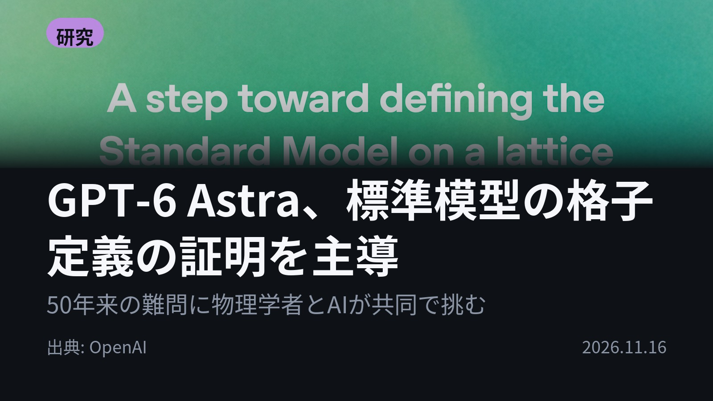
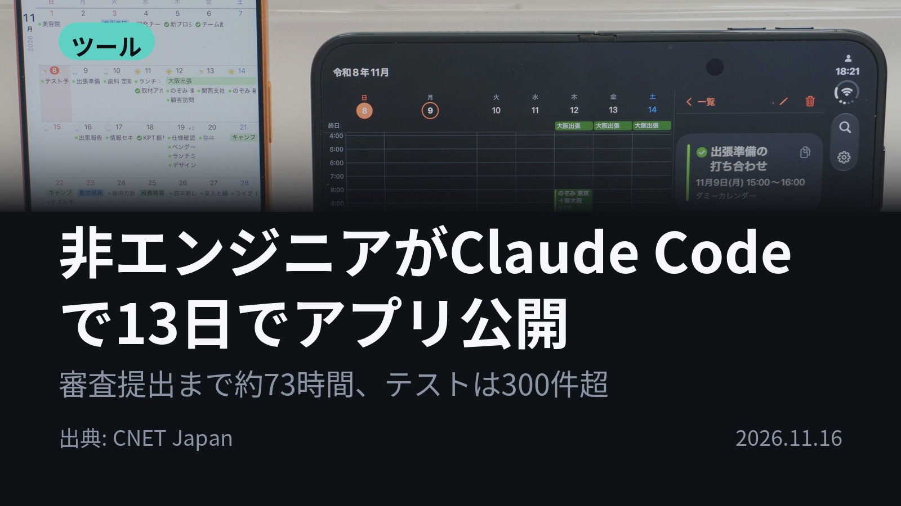
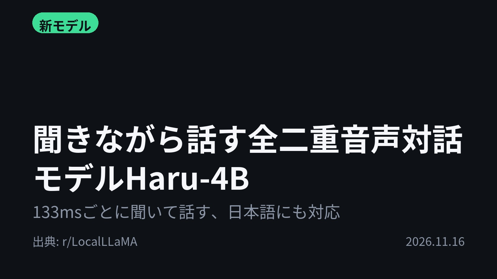
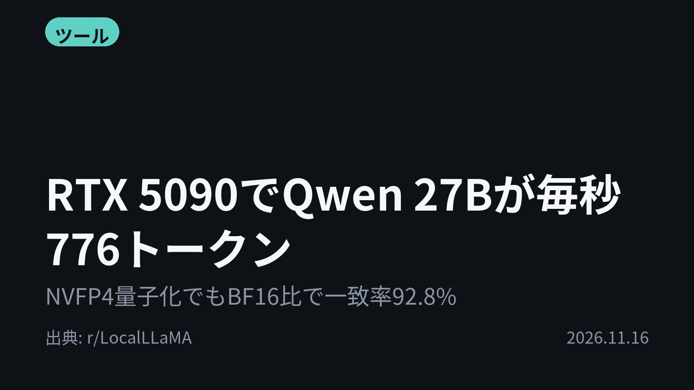
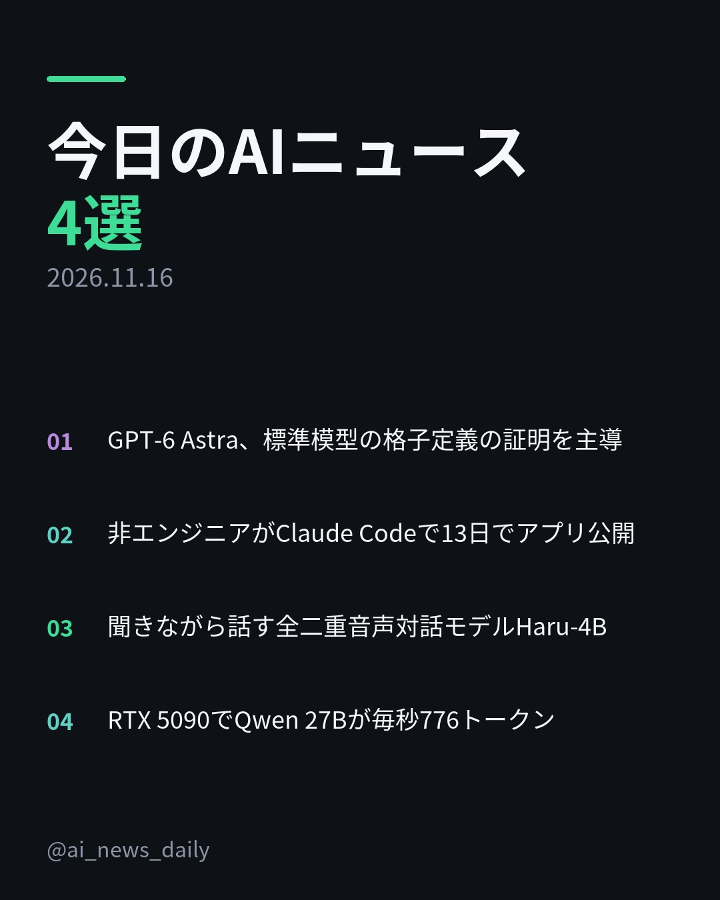
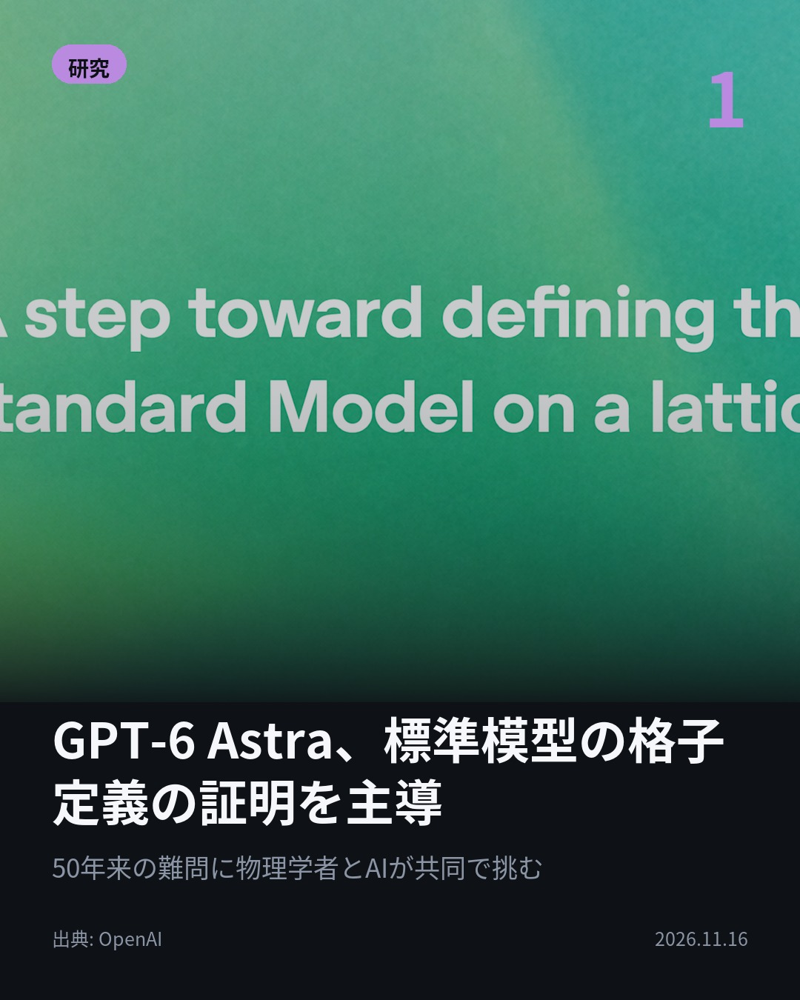
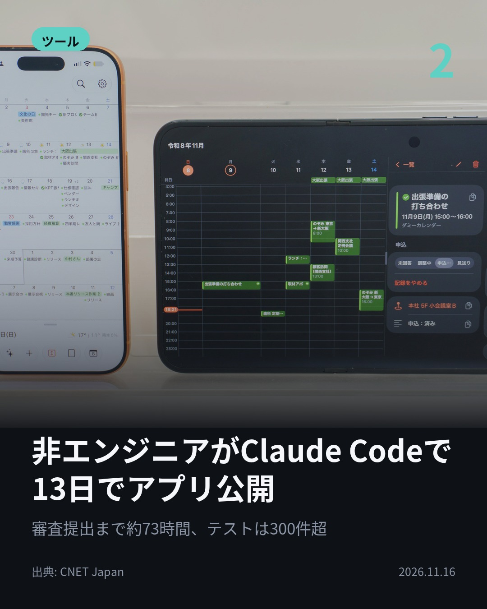
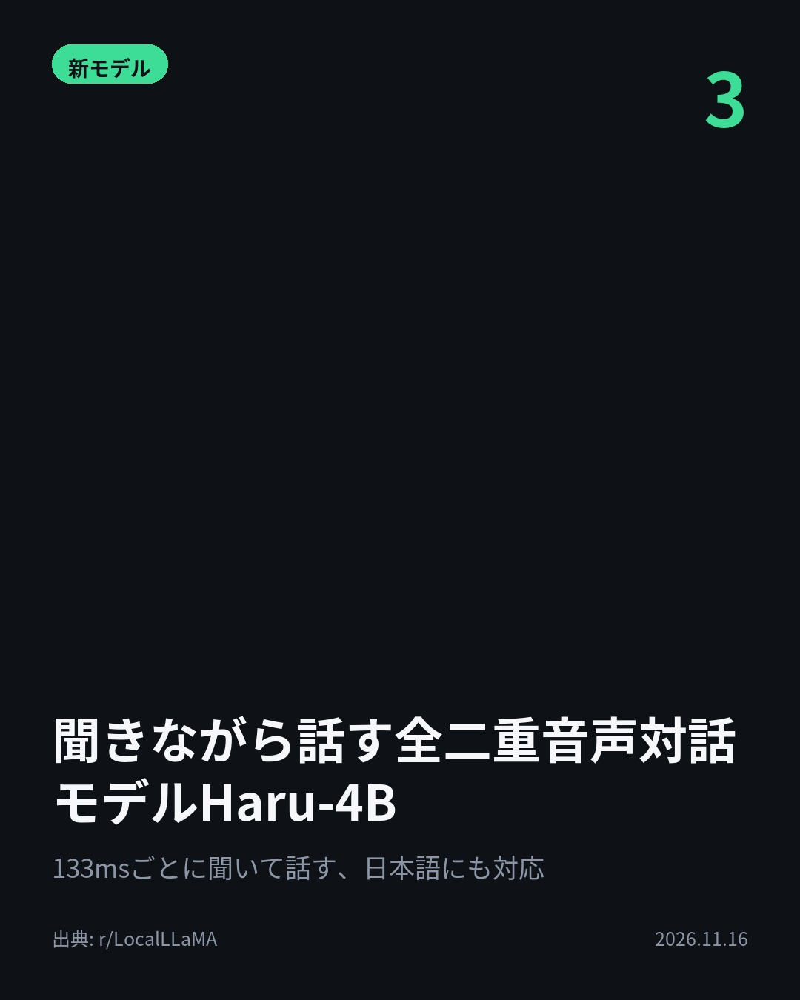
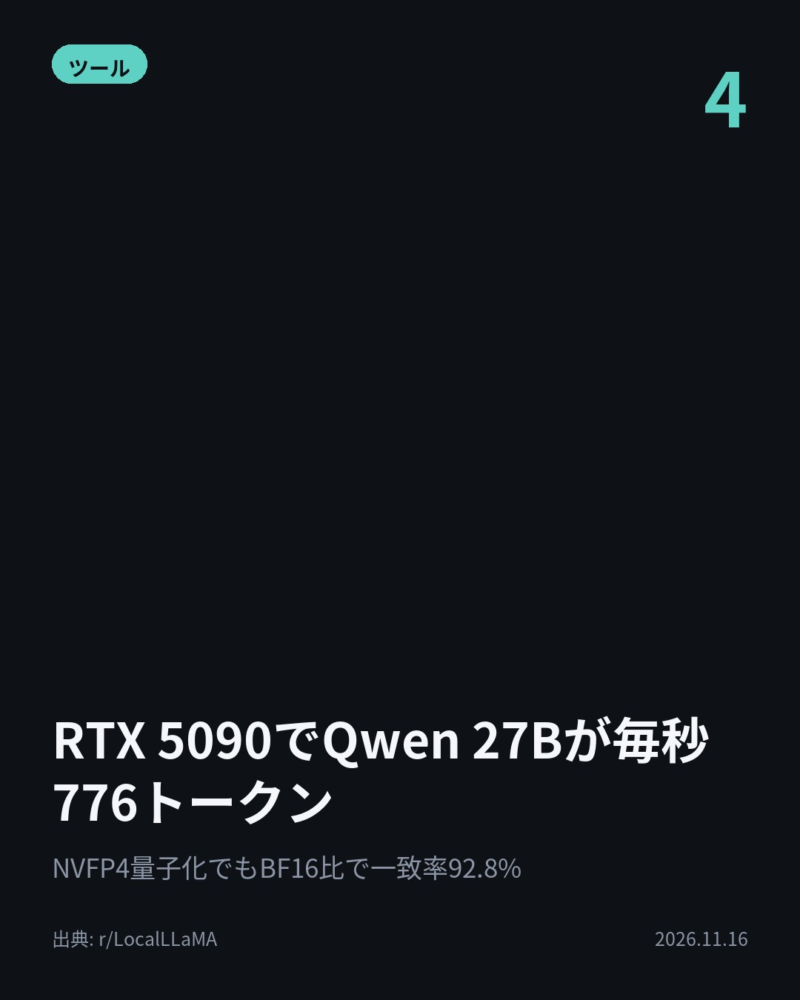

今日のAIニュース 下書き
2026-11-16 生成 11/16 20:32
⚠ ファクト照合で要確認の項目があります。
各ニュースの警告を確認してから投稿してください。
X（4投稿）
GPT-6 Astra、標準模型の格子定義の証明を主導
原題: A step toward defining the Standard Model on a lattice

50年以上未解決の問題に、AIが証明で挑んだ。 物理学者クレイグ氏がGPT-6 Astraと、標準模型を格子（時空の網目）上で定義する候補案を10月のプレプリントで提案。 詳細な証明づくりはAstraが主導した。 #AI #GPT6 （出典: OpenAI）
重み 215 / 280（見た目 125字）
要確認:
［数値］50年 — この数値の根拠が本文に見つかりません
［数値］10月 — この数値の根拠が本文に見つかりません
［固有名詞］クレイグ — この語が本文に見つかりません
［固有名詞］プレプリント — この語が本文に見つかりません
［固有名詞］ネイサニエル — この語が本文に見つかりません
［固有名詞］サンタバーバラ — この語が本文に見つかりません

非エンジニアがClaude Codeで13日でアプリ公開
原題: コードはすべてAI--非プログラマーの筆者がiPhoneアプリをApp Storeで公開するまでの13日間

発売日の夜、非プログラマーの筆者はAIに相談した。 コードはすべてClaude Codeが書き、構想から約73時間で審査提出、13日でApp Store公開。 テストは300件余り。実機確認と判断は人間。 #生成AI #ClaudeCode （出典: CNET Japan）
重み 214 / 280（見た目 133字）
要確認:
［固有名詞］プログラマー — この語が本文に見つかりません
［固有名詞］CNET — この語が本文に見つかりません
［固有名詞］Japan — この語が本文に見つかりません

聞きながら話す全二重音声対話モデルHaru-4B
原題: higurashi-ai/Haru-4B · Hugging Face

電話のように聞きながら話すAI、仕組みは？ 研究用に公開されたHaru-4Bは、133msごとに相手の音声1フレームを受け取り、自分の音声と文字を1フレーム出す。 日本語を含む9言語に対応し、声は短い音声クリップで指定。 #AI #音声AI （出典: r/LocalLLaMA）
重み 236 / 280（見た目 135字）
要確認:
［固有名詞］フレーム — この語が本文に見つかりません
［固有名詞］クリップ — この語が本文に見つかりません
［固有名詞］ベースモデル — この語が本文に見つかりません
［固有名詞］トークン — この語が本文に見つかりません
［固有名詞］ステップ — この語が本文に見つかりません
［固有名詞］キャラクター — この語が本文に見つかりません
［固有名詞］テキスト — この語が本文に見つかりません
［固有名詞］LocalLLaMA — この語が本文に見つかりません

RTX 5090でQwen 27Bが毎秒776トークン
原題: Basalt 0.4.0: More models, still as fast - Qwen 27B up to 770 tok/s on a 5090

RTX 5090でQwen 27Bが毎秒最大776トークン。 Basalt 0.4.0が初の密モデルに対応。776は構造化出力時で、会話は262。 NVFP4量子化でもBF16版とのtop-1一致率92.8%。 #AI #Qwen （出典: r/LocalLLaMA）
重み 185 / 280（見た目 130字）
要確認:
［固有名詞］トークン — この語が本文に見つかりません
［固有名詞］コンテキスト — この語が本文に見つかりません
［固有名詞］プリフィル — この語が本文に見つかりません
［固有名詞］RTX — この語が本文に見つかりません
［固有名詞］LocalLLaMA — この語が本文に見つかりません

Instagram（カルーセル 6枚）


1. 表紙


2. ニュース


3. ニュース


4. ニュース


5. ニュース

6. CTA
50年以上解けなかった物理の土台に、AIが証明づくりで挑んだ。 非エンジニアのアプリ公開、聞きながら話す音声AI、GPU1枚での高速推論まで、今日の4本です。 1. 物理学者ネイサニエル・クレイグ氏（UCサンタバーバラ）が、標準模型を時空の格子上で定義する候補案を提示。相互作用を小さな補正として扱わない「非摂動的」な定義は、50年以上の課題だった。氏の戦略をAstraが構成に落とし込み、詳細な証明を主導した。(OpenAI) 2. 作ったのは、月の区切りにとらわれず週を縦につなげる「つらなりカレンダー」。Claude CodeのRemote Controlを使い、ベッドや風呂からスマホで指示を出すこともあった。Appleの審査では追加情報を求められ、説明画面の指摘も受けたが、修正して承認された。(CNET Japan) 3. Haru-4Bは研究向けに公開された事前学習済みのベースモデル。音声を離散トークンにせず、1フレーム64次元の連続値として、小さなMLPヘッドが1ステップで生成する。キャラクターはテキストのカードで、声は短い参考音声で設定する。(r/LocalLLaMA) 4. Basalt 0.4.0はQwen 3.8 27B NVFP4に対応。4kコンテキストでのプリフィルは毎秒12,000トークン、文章生成は毎秒194トークン。最大262Kのコンテキストで、ツール呼び出しや画像・動画も扱える。(r/LocalLLaMA) 研究からアプリ開発、手元のGPUまで、AIが実際に手を動かした記録が揃った一日でした。 毎朝4本、AIニュースを見出しの先の中身まで要約しています。見逃さないようフォローと保存をどうぞ。 #AI #生成AI #人工知能 #テクノロジー #AIニュース #ChatGPT #Claude #ClaudeCode #AI活用 #LLM #ローカルLLM #OpenAI #GPT6Astra #標準模型 #物理学 #バイブコーディング #アプリ開発 #iPhoneDuo #音声AI #Haru4B #Qwen #Basalt
894字（Instagram上限 2,200字）
この日の選定理由
GPT-6 Astra、標準模型の格子定義の証明を主導
AIが補助役ではなく、理論物理の証明づくりを主導した事例です。基礎科学の研究の進め方が変わりつつあることを示しています。
非エンジニアがClaude Codeで13日でアプリ公開
コードを書かない人でもAIでアプリを公開できる一方、判断と責任は人間に残ることが具体的に分かります。バイブコーディングの実態を知るのに役立つ記録です。
聞きながら話す全二重音声対話モデルHaru-4B
電話のように相手の話を聞きながら同時に話せるオープンモデルで、日本語にも対応しています。自然な音声AIの研究が身近になります。
RTX 5090でQwen 27Bが毎秒776トークン
個人のGPU1枚で、中規模モデルが実用的な速度と精度で動くことを示しています。ローカルLLMの選択肢が広がります。